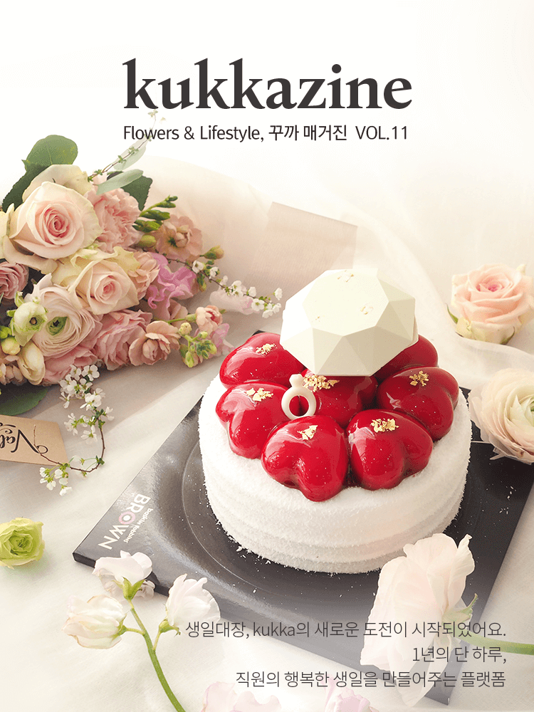
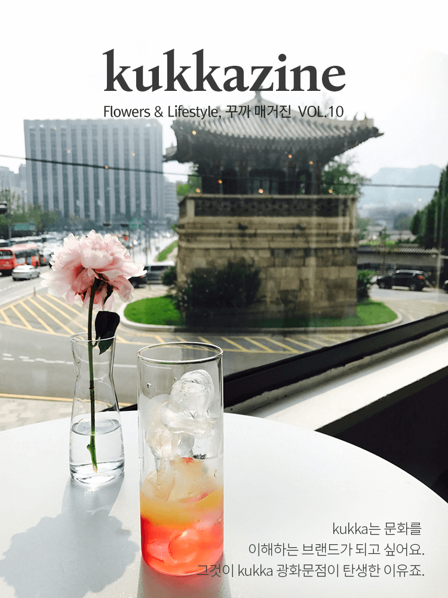

- kukka :: Live everyday with beautiful flowers
- kukka :: Live everyday with beautiful flowers
- kukka :: Live everyday with beautiful flowers
- kukka :: Live everyday with beautiful flowers
- kukka :: Live everyday with beautiful flowers
- kukka :: Live everyday with beautiful flowers
About us꽃이 필요한 순간 언제나 꾸까
꾸까는 일상에서 즐기는 꽃 문화를
만들어 나가는 플라워 전문 브랜드입니다.
행복한 날에는 늘 꽃이 있죠.
우리는 꽃과 함께라면 평범한 날도 행복한 날이 될 거라고 믿어요.
당신은 일상의 행복을 누릴 만큼 충분히 소중한 사람이니까요.
오프라인에서는 꽃으로 뒤덮인 공간으로
세상 사람들에게 영감을 주는 쇼룸을 선보이기도 하고,
꽃으로 디자인된 모든 것들을 모아둔 편집샵을 열기도 하는
미래를 그리고 있어요.
꽃이 주는 행복을 누구나 누릴 수 있도록
벌써 7년, 50만명이 경험한 꽃과 함께하는 일상의 행복.
당신의 하루도 행복으로 가득했으면 좋겠어요.
오늘부터 행복하세요.
from. kukka
언론보도
언론에 소개된
꾸까의 모습을
살펴보세요.
- 당장 신청하고 싶은 '이색 구독 서비스'
- 구독 방법은 간단하다. 일단 어떤 꽃을 받을 것인지 선택을 해야 한다. S부터 XL까지 꽃다발의 사이즈를 선택할 수 있다. 구독주기는 2주와 4주 중 한 가지를 택하면 된다.
- 전자시문 / 2020.12.07
- 한국P&G, 다우니 설렘 필터 사용 인증 이벤트
- 다우니 설렘 필터는 프리미엄 퍼퓸 섬유유연제의 바탕이 된 생화의 향기를 증강현실 기술로 시각화했다. 화면에 등장하는 꽃다발과 흩날리는 꽃잎이 특별한 재미와 함께 꽃 선물을 받은 듯한 설렘을 안겨준다.
- 스포츠동아 / 2020.12.01
- "직원 생일 대신 챙겨드려요" 꽃 서비스의 진화
- 꽃 구독 서비스 업체 꾸까(kukka)가 지난해 8월부터 시작한 기업 간 거래(B2B) 서비스 '생일대장'은 이런 고민을 파고들었다. 서비스 이용 기업이 직원의 생일 명단을 꾸가에게 보내주면 날짜에 맞게 꽃다발을 배송해주는 서비스다.
- 인터비즈 / 2020.11.18
- 소비자 사로잡은 맞춤형 '구독경제' 열풍
- ‘코로나 블루’로 지친 소비자들이 꽃을 정기적으로 배달을 받으며 소소한 힐링을 누릴 수 있는 서비스도 눈길을 끈다. '꾸까(Kukka)'는 꽃 정기구독 서비스를 국내에 최초 론칭한 플라워테크 스타트업이다. 소비자는 꾸까를 통해 2주와 4주 중 꽃다발을 받기를 원하는 기간을 설정할 수 있다.
- 뉴시스 / 2020.12.03
- 스트리밍 라이프 - 트렌드코리아 2021
- 스트리밍 라이프의 한 축인 '취향 컬렉터'는 전문가의 추천을 통해 자신의 취향을 특화시키고 확장하는 사람들을 일컫는다. 대표적으로 꽃 구독 서비스를 들 수 있는데, 1인당 연간 꽃 구매액이 1만 원대에 불과한 우리나라에서 월 매출 10억 원( 2020년 5월 기준)을 돌파한 '꾸까'는 국내 최초로 꽃 구독 서비스를 선보인 후 꾸준한 성장세를 이어가고 있다.
- 트렌드코리아 / 2020.11.26
- 일상을 구독하는 새로운 정기구독 서비스
- 세탁서비스(런드리고), 꽃다발(꾸까), 그림(오픈갤러리), 영양제(필리), 술(데일리샷), 마시는 차(보틀웍스)와 자동차(현대셀렉션)에 이르기까지 이제 정기구독 서비스는 온라인과 오프라인, 실물과 서비스 경계를 넘나들며 일상의 새로운 소비방식으로 자리잡고 있다.
- 공감신문 / 2020.11.11
- 1
- 2
- 3
- 4
- 5
매거진
kukkazine을 통해
꾸까의 다양한
활동을 볼 수 있어요.
- kukkazine 꾸까 매거진 VOL. 11
- 
- kukkazine 꾸까 매거진 VOL. 10
- 
- 1
- 2
- 3
- 4
- 5
꽃이야기
꾸까가 준비한
꽃 이야기를
만나보세요.
- 꽃, 오래 예쁘게 보는 방법 : 소재 활용편
- 꽃을 즐기는 건 정말 어렵지 않아요. 누구나 쉽게, 오래 볼 수 있는 방법을 소개해요! 잎 식물로 시작하는 그린 인테리어 꽃다발 장식을 위해 섞어 넣은 잎 식물을 따로 분리해 화병에 꽂아도 이뻐요!
- 2020.06.01
- 인테리어화분으로 인기인 실내공기정화식물 추천
- 요즘 한창 등장하는 ‘플랜테리어’라는 신조어, 혹시 들어보셨나요? 플랜테리어는 식물을 뜻하는 ‘플랜트’와 ‘인테리어’의 합성어로 공간을 한층 더 멋지게 만들어주는 식물의 인테리어 효과를 의미한답니다. 공기 청정은 물론, 인테리어 포인트로 빛을 발하는 식물이죠.
- 2019.09.23
- 계절의 시작을 꽃과 함께, 가을에 어울리는 꽃다발
- 뜨거운 여름의 열기도 한 풀 꺾이고 부쩍 선선해진 공기가 어느새 가을이 다가오고 있음을 실감나게 해요. 새로운 계절의 시작은 늘 우리의 마음을 이유없이 설레게 만들곤 하지요. 많은 사람들이 일년 중 가장 날이 좋고 바깥 풍경이 아름다운 계절로 꼽는 가을.
- 2019.08.27
- 꽃, 오래 예쁘게 보는 방법 : 기본편
- 꽃을 즐기는 건 정말 어렵지 않아요. 누구나 쉽게, 오래 볼 수 있는 방법을 소개해요! STEP01 화병은 항상 깨끗하게 화병 속 작은 세균은 꽃에 치명적일 수 있으니, 꼭 꼼꼼하게 씻은 화병을 준비해주세요!
- 2020.04.24
- 감사의 마음을 담은 추석선물로 좋은 꽃배달 추천
- 어느덧 민족대명절인 추석이 코 앞으로 다가왔어요. 많은 분들이 멀리 떨어져 있는 가족들과 고마운 분들에게 보낼 선물에 대해 고민하고 계실 것 같아요. 이번 추석에는 서프라이즈 꽃배달로 마음을 전해보면 어떨까요?
- 2019.09.06
- 한달 내내 전해지는 행복, 한달꽃 감성 꽃배달
- 요즘 ‘소확행’ 이라는 표현이 자주 들리는 것 같아요. 그만큼 많은 사람들이 일상 속에서 누릴 수 있는, 작지만 확실한 행복을 찾고 있다는 뜻이겠죠?
- 2019.08.09
- 1
- 2
- 3
- 4
- 5
Offline showroom꽃 속에서 작은 휴식을 누리는 공간
- 광화문
- 서울의 도심, 광화문에 위치한 kukka 2호점은
삭막한 도시의 빌딩숲 속에 잠시 쉬어갈 수 있는 공간이에요.
창 밖에 펼쳐지는 광화문의 낮과 밤을 감상하며 꽃을 즐길 수 있습니다.
- 영업시간매일 10:00 - 21:30전화번호070 - 4466 - 3897
- 서울특별시 종로구 사간동 126-3 (율곡로 1) 2층
- 잠실
- 서울의 가장 높은 건물, 롯데타워 옆에 자리잡은 kukka 3호점은
북유럽의 온실과 정원을 구현한 곳이에요. 온실 속에서 꽃을 만지고,
정원에 앉아 차 한잔을 마시는 행복이 느껴보길 바라며 디자인한 공간입니다.
- 영업시간매일 10:30 ~ 20:00전화번호02 - 3213 - 2514
- 서울특별시 송파구 올림픽로 300 에비뉴엘 5층
- 월계
- 강북의 첫 지점인 월계점은 European Modern Flower Market
컨셉으로 더욱 커진 파머스 마켓을 만날 수 있어요.
당신의 일상 가까운 곳에서 당신만의 플라워 라이프를 시작할 수 있는 곳이에요.
- 영업시간매일 10:00 - 22:00 전화번호02 - 948 - 2570
- 서울특별시 노원구 마들로3길 15 이마트 월계점 1층
- 구로
- 이제 꾸까의 European Flower Market을 구로에서도 만날 수 있어요.
새롭게 문을 연 도심형 아울렛 NC 구로점의 1층 정문 옆에 위치해
쇼핑을 오시는 분들을 꾸까가 환하게 맞이하고 있어요..
- 영업시간매일 10:30 ~ 21:00전화번호02 - 6923 - 2170
- 서울특별시 구로구 구로중앙로 152 NC 백화점 신구로점 1층